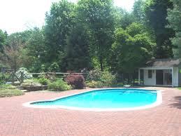
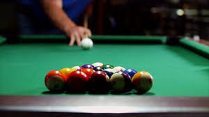

Mysore Heritage Resort
Facilities

Resturant
At Mysore Heritage Resort, the guests are pampered with many kinds of dishes from the Kadava cuisine and other South Indian
specialities at the three restaurants, including Green Cardamom and Mercara, that dot the resort.

Swimming Pool
At Mysore Heritage Resort has two swimming pools, one located near Mercara restaurant and the other near the spa building, for the benefit of guests.
The pools are ideal for cooling off or get a spot of exercise or even just to lounge around and relax. Swimsuit is essential for using the pools.

Indoor Game
At Mysore heritage Resort indoor activity centre of Fun Zone is a perfect place to enjoy such activities as board games,
shooting pool and video games. This is also where the Crocodile Club is located
Gym
At Mysore Heritage Resort For the health and exercise conscious, the resort offers a gymnasium with a variety of exercise options.
It is located on the ground floor in the spa building.